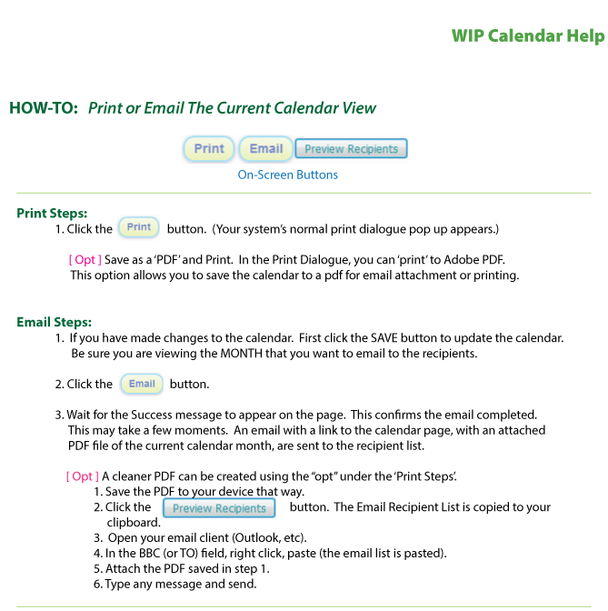
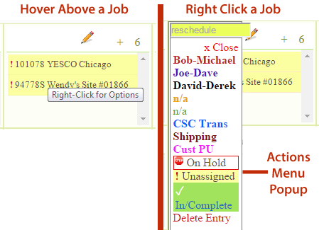
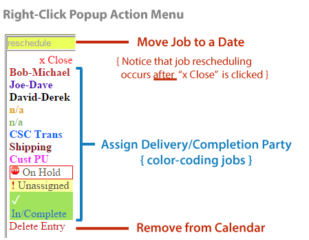

! No changes are recorded until SAVE UPDATES button is Clicked. If you close the Calendar or browse away, your changes will be lost.

RE-Assigning / RE-Scheduling Jobs


FAQ: EMAILING THE CALENDAR
Does Save Updates Send an Email Notification Out?
ANSWER: No. It simply saves the current company's calendar to a permanently saved record.
How Do I Email A Calendar?
ANSWER: Browse to the MONTH You Wish to Email. Click the Button Labeled "Email".
Who Receives the Emailed Month?
ANSWER: HOVER Over the Button "Preview Recipients" to See the List. Note, You Can Click That Button to Copy the Entire List and Paste Into Outlook's TO: Field. This Way, You Can Delete or Add Emails to Edit the Recipeints if You Wish. (See: Attach PDF Month to Email).
How Can I Attach a PDF Month to Email?
ANSWER: View the Calendar's HELP Link, Which Describes the Process in Detail (above).